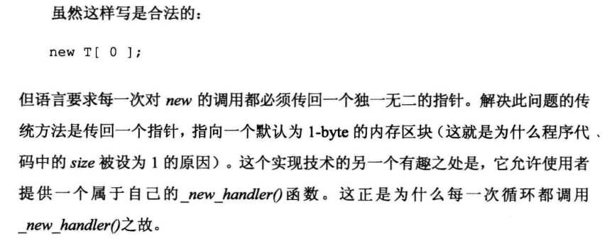

new
用 new 申请的内存最少占用 1 个字节——尽管我们申请的可能是 0 个字节。

delete/delete[]
delete 和 delete[] 都会归还空间，但是 delete[] 会询问元素数量，并析构数组中的每个元素，而 delete 只会析构一个元素。
尽管虚析构函数允许我们正常 delete 掉指向子类对象的基类指针，但是在基类指针上使用 delete[] 可能是有错的：
1 |
|
上述代码在 Godbolt 上编译后返回 139。这里应用 delete[]，程序会将数组当成 A 数组来析构，把 A 的大小作为步长分割申请的空间，然后在每个”对象“上调用析构函数。这显然是不正确的，因为真正的步长是 B 的大小。
如果注释掉 B 类中的 double b; 声明，让 A 和 B 的大小一致，那么析构过程不会引发程序错误。但是非常不建议这么做！这对程序修改的容错不友好。